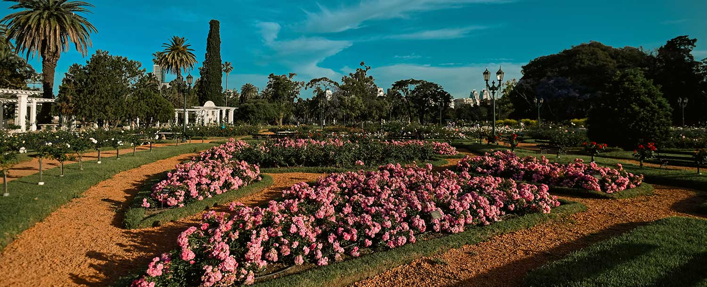
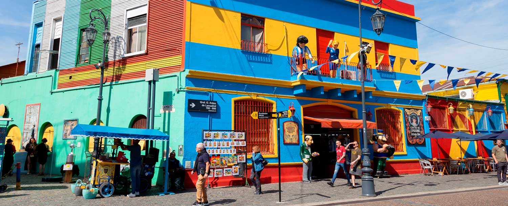

Uno de los barrios más antiguos y tradicionales de la ciudad.
Sus calles empedradas, casonas coloniales y el histórico
Mercado de San Telmo reúnen antigüedades,
cultura popular y una gastronomía variada.
¿Qué podés hacer acá?
Recorrer la famosa Feria de Antigüedades
en la Plaza Dorrego los domingos.
Probar platos típicos argentinos y
empanadas criollas dentro del mercado.
Ver espectáculos callejeros de tango en vivo.
Recomendación:
es el lugar ideal para conocer la historia porteña,
conseguir recuerdos únicos y disfrutar del tango.

Bosques y Rosedal de Palermo
Ubicación:
Zona Norte - Comuna 14.
Un enorme pulmón verde en medio de la ciudad.
Cuenta con un gran lago central, el histórico Rosedal
con miles de especies de rosas y áreas de descanso
rodeadas de naturaleza.
Actividades recomendadas
Alquilar un bote a pedal para navegar por el lago central.
Pasear por el Puente Blanco y el Jardín de los Poetas.
Hacer picnic, andar en bicicleta o patinar.
Recomendación:
ofrece un refugio de tranquilidad, aire puro
y paisajes hermosos para disfrutar durante la tarde.

Caminito y Barrio de La Boca
Ubicación:
Zona Sur - Comuna 4.
Famoso por sus casas de chapa de vivos colores,
sus orígenes ligados a los inmigrantes italianos
y su relación con el fútbol y el arte popular.
Actividades recomendadas
Recorrer Caminito.
Visitar las galerías de arte callejero.
Conocer el estadio y museo de Boca Juniors.
Recomendación:
es uno de los lugares más coloridos e icónicos
de Buenos Aires.